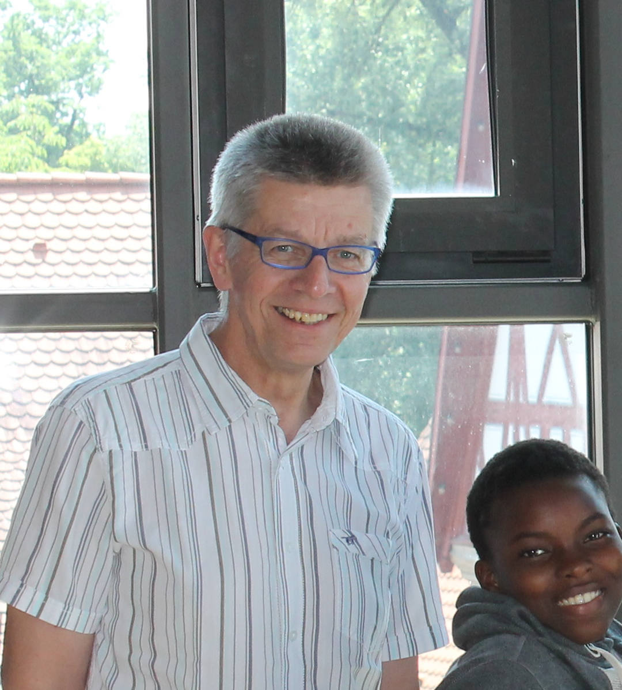

Welcher Kandidat passt zu dir?
Kandidaten-Check
Mach den Test und schau, welcher Kandidat persönlich und politisch am besten zu dir passt
Der Kandidaten-Check
Dies wurde am Dienstagabend im Kupferzeller Gemeinderat bekannt. Das Landratsamt Hohenlohekreis forderte die Gemeinde auf, Stellung zu den Plänen des Bürgerwindparks Hohenlohe zu nehmen. Ihre Unterlagen hat die Firma bereits bei der Behörde zur Genehmigung eingereicht.
Wähle deinen Wahlkreis
EP
Eppingen
HN
Heilbronn
NSU
Neckarsulm
HOH
Hohenlohe
Was ist dein Lieblingsessen?
Pasta
Pizza
Spätzle
Kaiserschmarrn
Dein Ergebnis

Max Mustermann, Die Partei, 34 Jahre, verheiratet, ein Kind, Neckarsulm
62%
Politisch

Gertrud Mustermann, Die Gute Partei, 45 Jahre, verheiratet, fünf Kinder, Neckarsulm
62%
Privat